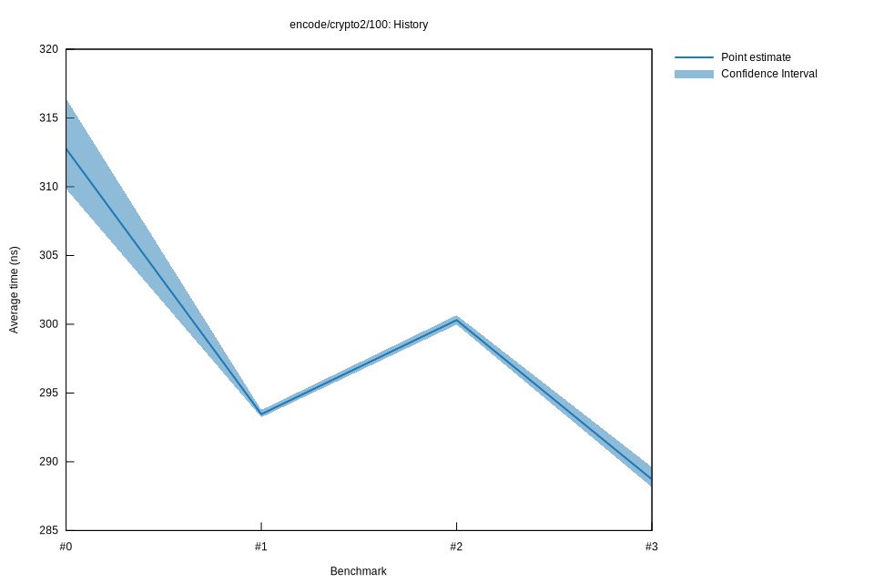

# 52022-10-16T20:03:27+03:00
|
Lower Bound |
Estimate |
Upper Bound |
| Value: |
278.23ns |
279.03ns |
279.87ns |
| Throughput: |
349.62MiB/s |
348.61MiB/s |
347.57MiB/s |
| Change in Value: |
-7.5166% |
-6.3084% |
-5.3023% |
| Change in Throughput: |
+8.1275% |
+6.7332% |
+5.5992% |
No change in performance detected.
# 42022-10-16T17:23:18+03:00
|
Lower Bound |
Estimate |
Upper Bound |
| Value: |
296.51ns |
297.89ns |
300.00ns |
| Throughput: |
328.06MiB/s |
326.54MiB/s |
324.25MiB/s |
| Change in Value: |
+2.5625% |
+3.4711% |
+4.6648% |
| Change in Throughput: |
-2.4985% |
-3.3546% |
-4.4569% |
No change in performance detected.
# 32022-10-15T17:14:49+03:00
|
Lower Bound |
Estimate |
Upper Bound |
| Value: |
288.15ns |
288.72ns |
289.62ns |
| Throughput: |
337.58MiB/s |
336.92MiB/s |
335.88MiB/s |
| Change in Value: |
-3.8768% |
-3.5884% |
-3.2629% |
| Change in Throughput: |
+4.0332% |
+3.7219% |
+3.3730% |
No change in performance detected.
# 22022-10-15T16:49:49+03:00
|
Lower Bound |
Estimate |
Upper Bound |
| Value: |
299.97ns |
300.30ns |
300.66ns |
| Throughput: |
324.28MiB/s |
323.92MiB/s |
323.54MiB/s |
| Change in Value: |
+2.1046% |
+2.2798% |
+2.4622% |
| Change in Throughput: |
-2.0612% |
-2.2290% |
-2.4031% |
No change in performance detected.
# 12022-10-08T17:26:34+03:00
|
Lower Bound |
Estimate |
Upper Bound |
| Value: |
293.23ns |
293.46ns |
293.76ns |
| Throughput: |
331.73MiB/s |
331.47MiB/s |
331.13MiB/s |
| Change in Value: |
-16.433% |
-13.035% |
-9.8432% |
| Change in Throughput: |
+19.664% |
+14.989% |
+10.918% |
No change in performance detected.
# 02022-10-08T17:07:31+03:00
|
Lower Bound |
Estimate |
Upper Bound |
| Value: |
309.86ns |
312.76ns |
316.40ns |
| Throughput: |
313.93MiB/s |
311.02MiB/s |
307.44MiB/s |